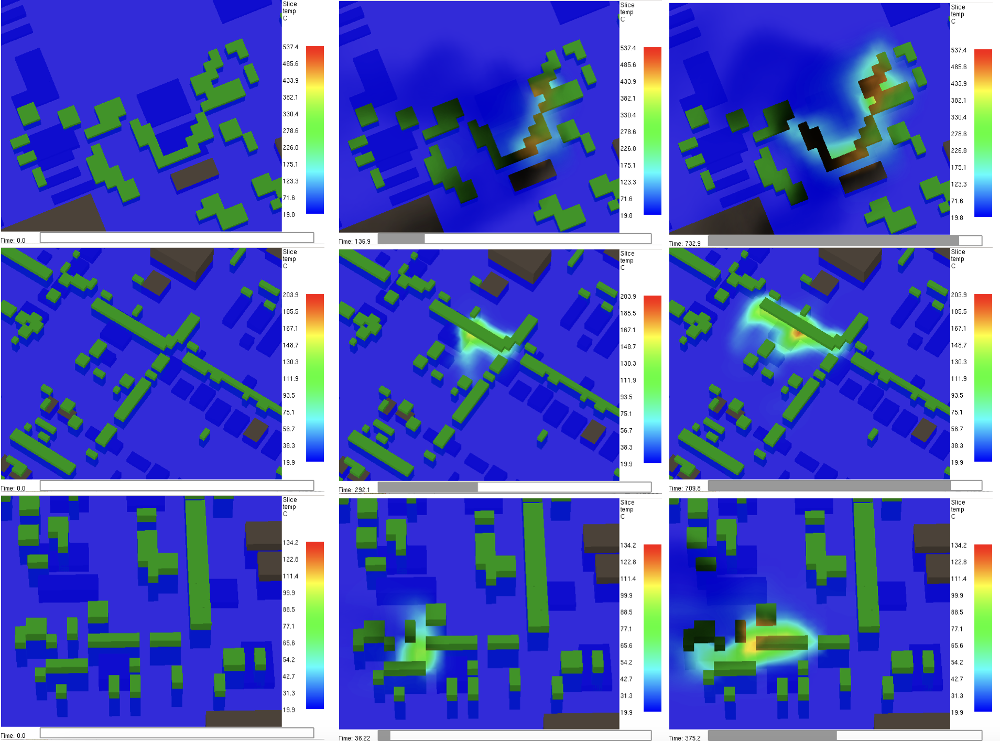
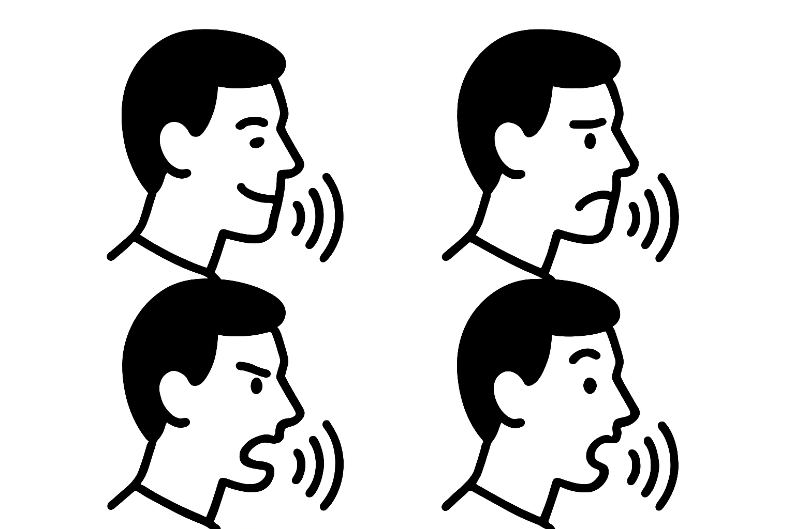

Undergraduate Research Assistant.
Teaching Assistant.
I enjoy writing and fine tuning rendering pipelines, running experiments on my scenes, building beautiful graphs for my data, math, and the statistics behind machine learning. I have enjoyed a variety of courses at Purdue. Favorites range from computer graphics to math: analysis of algorithms and group theory to machine learning/AI to low level programming: systems programming, computer architecture, and operating systems.
I currently work as an undergraduate research assistant at the CS XR Lab under Professor Voicu Popescu. My research focuses on managing complex environments in VR for real-time applications through rendering optimizations. I was previously a researcher at the IDEAS Lab conducting machine learning research -- culminating in the Purdue Spring 2024 Undergraduate Research award.
I've been a teaching assistant for CS 240: Programming in C, CS 252: Systems Programming, and CS 381: Intro to the Analysis of Algorithms. For two summers now, I have been developing and distributing course material (homeworks, solutions, test modules) for CS 240 and CS 252. I love interacting with students.
In my free time, you will catch me making dosas with my friends, playing badminton, swimming, running 5Ks, or sketching away. I co-founded the Dosa Club at Purdue.
Otherwise, I dream of working at Pixar and on RenderMan someday. Welcome again.
Research

UFZs: A Novel Method to Identify Urban Fire Zones for Urban Planning
Mridu Prashanth, Nick Myrick, Daniel Aliaga, Aniket Bera
Purdue Fall Research Expo, IDiF Summer Undergraduate Research Symposium (2024)
Abstract |
Poster

ARTEMIS: AI-driven Robotic Triage Labeling & Emergency Medical Information System
Revanth Krishna Senthilkumaran, Mridu Prashanth, Hrishikesh Viswanath, Sathvika Kotha, Kshitij Tiwari, Aniket Bera
Purdue Spring Research Conference (2024)
Paper |
Poster |
Talk |
Webpage

AffectEcho: Speaker Independent and Language-Agnostic Emotion and Affect Transfer for Speech Synthesis
Hrishikesh Viswanath, Aneesh Bhattacharya, Pascal Jutras-Dube, Prerit Gupta, Mridu Prashanth, Yashvardhan Khaitan, Aniket Bera
Paper |
Code |
Webpage